3．黎曼研究几何的途径
由高斯、罗巴切夫斯基和约翰·波尔约的工作引起的，关于物理空间的几何我们可以相信些什么，这个疑问推动了19世纪的重大创造之一——黎曼几何的产生，创立者是最深刻的几何哲学家黎曼。虽然黎曼并不知道罗巴切夫斯基和约翰·波尔约工作的细节，但高斯是知道他们的，而黎曼肯定知道高斯对欧几里得几何的真实性和必然适用性的怀疑。这样，在几何领域中黎曼追随高斯，虽然在函数论中他追随柯西和阿贝尔。他对几何的研究也受心理学家赫巴特（Johann Friedrich Herbart，1776—1841）教导的影响。
高斯给黎曼指定把几何基础作为他应该发表的就职演说的题目，这是大学讲师为取得大学教授资格所应做的演说。这个讲演于1854年对格丁根的全体教员发表，有高斯在场，并在1868年以《关于作为几何学基础的假设》（Über die Hypothesen，welche der Geometrie zu Grunde liegen）为题出版(9)。
为竞争巴黎科学院的奖金，黎曼在1861年写了一篇关于热传导的文章，这篇文章常常叫做他的《巴黎之作》（Pariserarbeit），在文中黎曼发现必须进一步考虑他关于几何的思想，在这里他对他的1854年的文章作了某些技术性的加工。1861年的这篇没有获奖的文章，在他死后发表在1876年他的《文集》（Collected Works）(10)中。在《文集》的第二版里，海因里希·韦伯（Heinrich Weber）在一篇注解中解释了黎曼的高度压缩了的题材。
黎曼提出的空间的几何并不只是高斯的微分几何的推广。他重新考虑了研究空间的整个途径。黎曼研究了上述关于物理空间我们究竟可以确信什么的问题。在通过经验确定物理空间中成立的特殊公理之前，在真实的经验空间中什么条件或什么事实必须预先假定呢？黎曼的目的之一是要证明，欧几里得的独特的公理，与其说如人们历来相信的那样是自明的真理，还不如说是经验性的。他采用了解析的途径，因为在几何证明中，由于我们的感觉，我们可能错误地假定一些不是显然可以承认的事实。这样，黎曼的思想是：依靠分析我们可以从关于空间无疑是先验的东西出发，导出必然的结论。于是就会知道空间的任何其他的性质都是经验的。高斯自己研究了完全相同的问题，但是仅仅发表了这个研究的论曲面的部分。黎曼对于什么是先验的探讨导致他研究空间的局部性质；换句话说，就是采用微分几何的途径，这同在欧几里得几何中或者在高斯、约翰·波尔约和罗巴切夫斯基的非欧几里得几何中，把空间作为一个整体进行考虑是相对立的。在作详细的考察之前，我们应该预先说明，表述在1854年的讲演以及在原稿中的黎曼的思想是模糊的。一个原因是黎曼为了适应他的听众——格丁根的全体教员。部分的模糊也和他文章开头的哲学考虑有关。
高斯关于欧几里得空间中曲面的内蕴几何学，开辟了一个很大的领域，黎曼对任一空间发展了一种内蕴几何。虽然三维的情形显然是一种重要的情形，黎曼还是宁可处理n维几何，并且他把n维空间叫做一个流形。n维流形中的一个点，可以用n个可变参数x1，x2，…，xn的一组指定的特定值来表示，而所有这种可能的点的总体就构成n维流形本身，正如在一个曲面上的点的全体构成曲面本身一样。这n个可变参数就叫做流形的坐标。当这些xi连续变化时，对应的点就遍历这个流形。
因为黎曼认为我们只能局部地了解空间，所以他从定义两个一般点之间的距离出发，这两个点所对应的坐标只相差无穷小。他假定距离的平方是
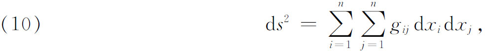
其中
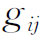
是坐标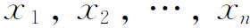
的函数，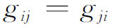
，并且（10）的右边对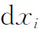
的所有可能值总是正的。ds2的这个表达式是欧几里得距离公式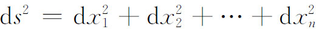
的推广。他提到有可能假定ds是微分
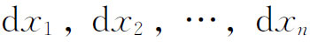
的一个四次齐次函数的四个根中的一个。但是他没有深入研究这种可能性。由于允许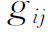
是坐标的函数，所以黎曼提供了空间的性质可以逐点而异的可能性。虽然黎曼在他1854年的文章中没有明确地阐述下面的定义，但在他的心目中无疑是有的，因为它们与高斯对曲面所做的是相同的。黎曼流形上的一条曲线由n个函数
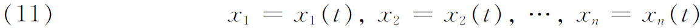
给定。于是，在t＝α和t＝β之间的曲线的长度定义为
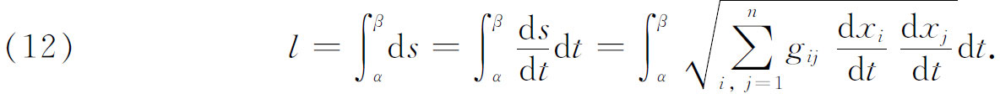
在两个给定点t＝α和t＝β之间的最短曲线——测地线，随之可用变分法确定。用变分学的记号，这就是适合条件
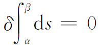
的曲线。于是，必须确定形如（11）的特定的函数，它给出两点之间的这条最短道路。取弧长s作为参数，测地线的方程可以证明是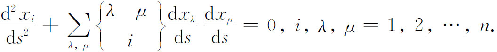
这是n个二阶常微分方程的方程组(11)。
两条曲线在点
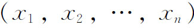
处相交，一条曲线由方向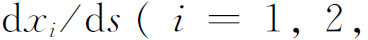
…，n）确定，另一条由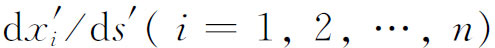
确定，其中撇表示属于第二个方向的值，这两条曲线在交点处的交角θ由公式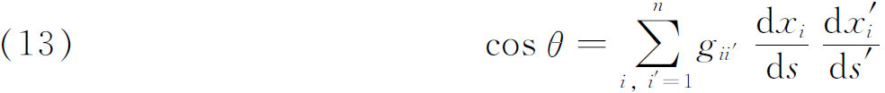
确定。仿照高斯对曲面所用的那套方法，以上面的定义作基础，可以推出一种度量的n维几何。所有的度量性质由ds2的表达式中的系数gij确定。
在黎曼1854年的文章中的第二个重要的概念，是流形的曲率的概念。黎曼企图通过它去刻画欧几里得空间和更一般的空间，在这种空间中图形可以挪动而不改变其形状或大小。黎曼关于任意n维流形的曲率的概念，是高斯关于曲面的总曲率概念的推广。如同高斯的概念一样，流形的曲率可用一些量定义，而这些量可以在流形自身上确定，从而无需把流形想象成位于某一更高维的流形中。
在n维流形中给定一点P，黎曼考虑在这点的一个二维流形，这个二维流形在n维流形中。这个二维流形由经过P点的无穷多条单参数测地线构成，这些测地线同流形的平面截口在P点相切。现在一条测地线可以用点P和在该点的一个方向来描述。设
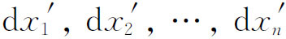
是一条测地线的方向，而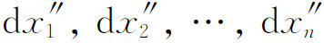
是另一测地线的方向。则在P点的单参数无穷多条测地线中，任一条的方向的第i个分量由下式给出：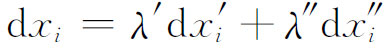
［λ′和λ″要受条件
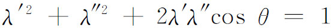
的限制，这个条件是由条件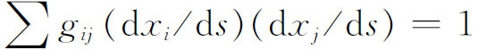
导出的］。这一组测地线构成一个二维流形，它有一个高斯曲率。因为经过P点的这种二维流形有无穷多，所以在n维流形的一个点处就有无穷多个曲率。但是，在这些曲率的测度中，可以从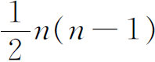
个推得其余的。曲率的测度的一个显式现在可以推出来。这是黎曼在他1861年的文章中就已做了的，在下面即将给出。对于流形就是一个曲面的情形，黎曼的曲率恰恰就是高斯的总曲率。严格地说，正如高斯的曲率一样，黎曼的曲率是一种加在流形上而非流形自身的度量性质。黎曼在完成了他的n维几何的一般研究，并说明如何引进曲率以后，进而考虑特定的流形，在这种流形上，有限的空间形式应当能够移动，而不改变其大小或形状，并且应当能够按任意方向旋转。这就把他引到常曲率空间。
当在一点所有曲率的测度都相同，并且等于其他任何点的所有曲率的测度时，我们得到黎曼称之为常曲率的流形。在这种流形上，可以讨论全等的图形。在1854年的文章中黎曼给出下述结果但没有详说：如果α是曲率的测度，常曲率流形上无穷小距离元素公式变成（在一适当的坐标系中）
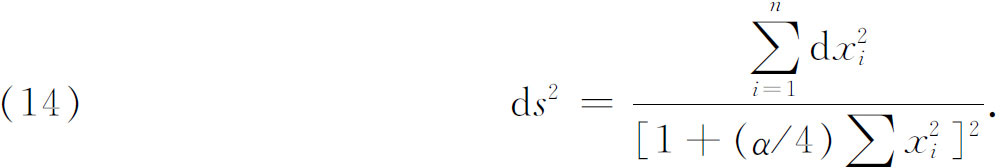
黎曼认为曲率α必须是正的或是零，所以当α＞0时我们得到一个球面空间，而当α＝0时得到一个欧几里得空间，反之亦然。他还认为，如果一个空间是无限伸展的，其曲率必须为零。然而，他确实提示过，可能有现实的常数负曲率曲面(12)。
对
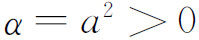
，且n＝3的情形，由于高斯的工作，我们得到一种三维的球面几何，虽然不能把它形象化。这个空间在广度上有限但是无界；在其中所有的测地线都是定长，等于2π/a，并且回到它们自身；空间的体积是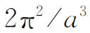
。对于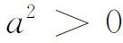
和n＝2的情形，我们得到通常的球面的空间；测地线当然就是大圆并且是有限的；而且，任意两条测地线交于两点。至于黎曼是否认为常数正曲率曲面上的测地线都交于一点或两点，实际上是不清楚的。他可能倾向于后者。克莱因后来指出（见下一章），这里涉及两种不同的几何。黎曼还指出空间的无界性（球的表面就是这种情形）和无限性之间的一种区别，这种区别后面还要讲到。他说，无界性与任何其他由经验得来的事情，例如同无限广度相比，有更大的经验可信性。
黎曼在他的文章结尾还指出，因为物理空间是一种特殊的流形，所以那种空间的几何不能只是从流形的一般概念推出来。把物理空间同其他三维流形区别开来的那些性质，只能从经验得到。他附带地说：“关于流形的这些假设，在何种程度上以及在哪一点上可以由经验肯定，这个认识问题尚待解决。”特别地，欧几里得几何的公理可能只是物理空间的近似写照。同罗巴切夫斯基一样，黎曼相信天文学将判定哪种几何符合于空间。他以下面的预言性评论结束他的文章：“所以，或者作为空间基础的客体必须形成一个离散的流形，或者在作用于它上面的约束力之下，我们应当从它的外部寻找其度量关系的根据……这就把我们引到另一门科学——物理学的领域，我们的工作的宗旨不容许我们今天进入那个领域。”
这个观点被克利福德（William Kingdon Clifford）(13)所发展：
事实上我认为：（1）空间的小部分有一种性质，类似于曲面上的小山，这曲面平均看起来是扁平的。（2）呈弯曲的或畸变的这种性质以波浪方式连续地从空间的一部分传到另一部分。（3）空间曲率的这种变化，确实如我们称之为物质运动的那种现象中所发生的情况一样，不管这种物质是有重量的还是像空气那样稀薄的。（4）在这个物理世界中，除了可能遵循连续性规律的这种变化之外，没有其他事情发生。
在曲率不仅逐点变化，而且由于物质的运动也随时间而变化的空间中，通常的欧几里得几何法则是不成立的。他接着又说，要想对物理规律作较为严格的研究，就不能忽视空间中的这些“小山”。这样，与其他的大多数几何学家不同，黎曼和克利福德感到，为了确定什么是物理空间的真理，需要把物质和空间结合起来。这个思路自然就引导到相对论。
黎曼在他的《巴黎之作》（1861）中回到下述问题：一个度量为
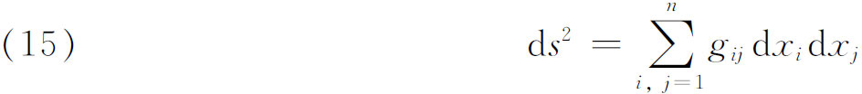
的给定的黎曼空间，在什么时候可以是一个常曲率空间，或者甚至是一个欧几里得空间。但是，他提出了更为一般的问题：在什么条件下，可以通过方程组
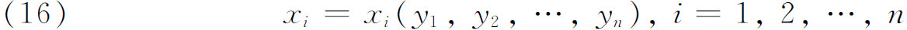
把如同（15）那样的度量变成一个给定的度量
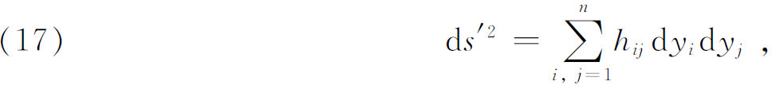
当然，这里应理解为ds等于ds′，如此，两个空间的几何除了坐标的选取外将是相同的。变换（16）并不总是可能的，因为正如黎曼指出的，在（15）中有n（n＋1）/2个独立函数，而可用以把gij变成hij的变换只能引进n个函数。
为了处理一般的问题，黎曼引进了一些特殊的量
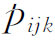
，我们将代之以更加熟悉的克里斯托费尔记号，这里理解为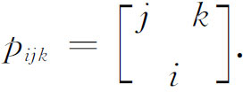
表示成各种形式的克里斯托费尔记号是
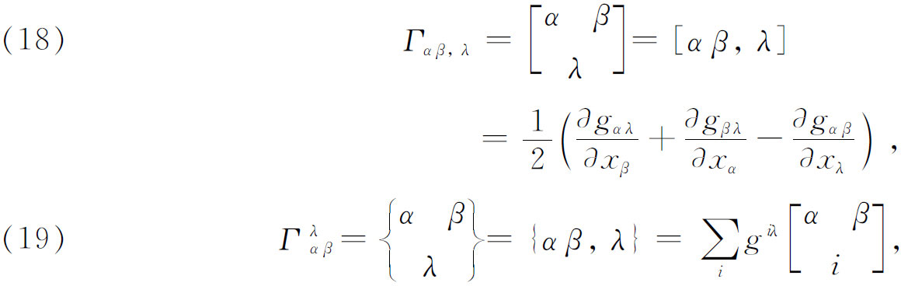
其中
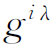
是行列式g中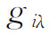
的余子式除以g。黎曼还引进现在通称的黎曼四指标记号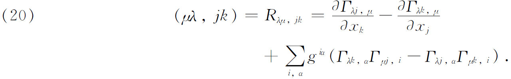
然后，黎曼证明了ds2可以变成
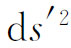
的一个必要条件是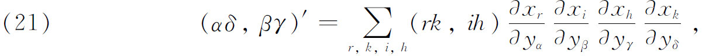
其中左边的记号指的是对度量ds′所构造的量，并且对于每一个遍历1到n的α，β，γ，δ的所有值，（21）都成立。
黎曼现在回到特殊的问题：在什么条件下给定的ds2可以变成带常系数的。他先导出关于流形曲率的一个显式。在1854年的文章中已经给出的一般定义用到从空间的一点O出发的测地线。设d和δ确定两个向量或从O点出发的两条测地线的方向（每一个方向由测地线的切线的分量规定）。然后，考虑从点O出发并由
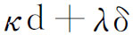
给定的测地线向量束，其中κ和λ是参数。如果设想d和δ作用在表示任一曲线的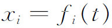
上，则二阶微分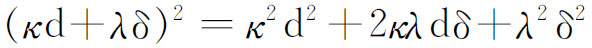
有意义。于是黎曼构造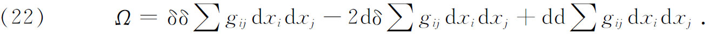
这里，理解为d和δ形式地作用在它们后面的表达式上（而且d和δ可交换），所以
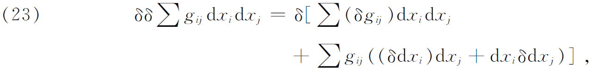
并且
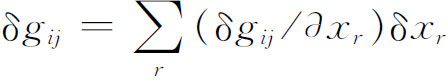
。如果计算Ω，就能发现包含一个函数的所有三阶微r分的项都为零，只剩下包含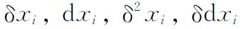
和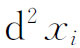
的项。通过计算这些项并用记号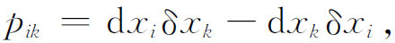
黎曼得到
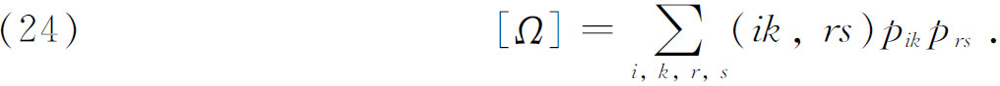
现在令
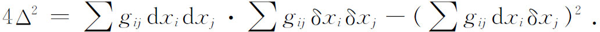
则黎曼流形的曲率K是
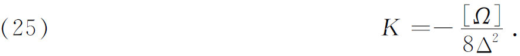
全部结论是：若要给定的ds2能够回到形式（对n＝3）
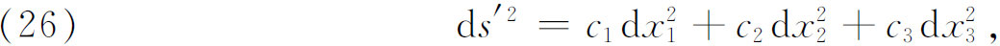
其中ci都是常数，其必要充分条件是，所有的记号都为零。在ci全是正的情况下，可以化成，即空间是欧几里得空间。正如我们能从［Ω］的值看到的，当K是零时，空间实质上是欧几里得的。
值得注意的是，一个n维流形的黎曼曲率，在曲面的情形就化为高斯总曲率。事实上，当
时，16个记号中的12个是零，对其余的4个我们有
于是黎曼的K化成
通过（20），可以证明这个表达式等于曲面总曲率的高斯的表达式。